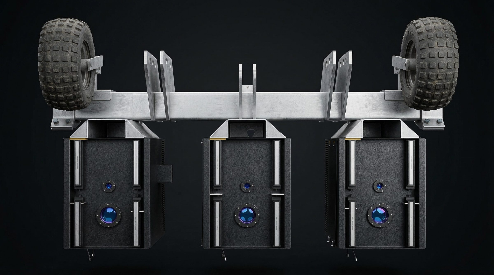
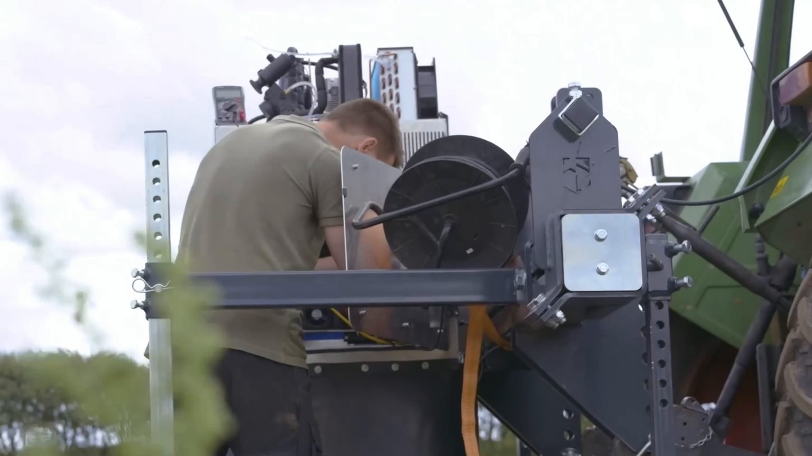

Ecoray
Laserlugning i rækken. Uden sprøjtemidler og uden håndlugning.

Bevist i marken
Målt i markforsøg i danske grøntsagsmarker.
96,5 %af ukrudtet fundet
0,1 %afgrødeskade
0 Lsprøjtemiddel

Passer til den traktor, du har
Monter to moduler eller fem. Med fem moduler luger du cirka 1 hektar i timen.
Find. Sigt. Fjern.
Kameraer og AI finder hver ukrudtsplante på kimbladsstadiet og retter laseren mod vækstpunktet, tæt ved din afgrøde.

Udviklet i Aarhus
Designet, bygget og testet i danske marker til europæiske avlere.